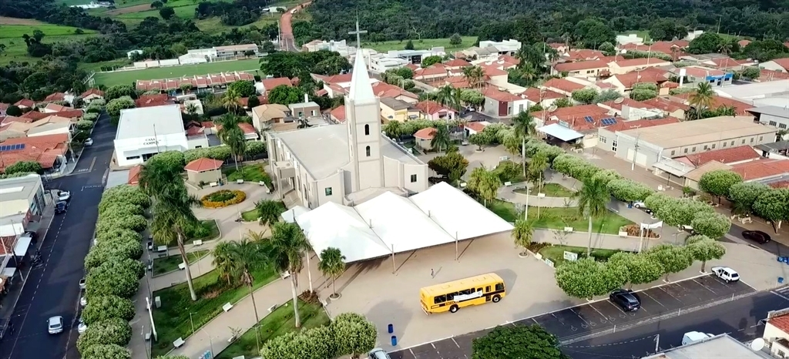

Sebastianópolis do Sul é uma cidade localizada no interior do estado de São Paulo
Sobre MimPopulação: A cidade tem uma população de aproximadamente 3200 habitantes.
Fundação:Em 1905 quando Januário Alves doou 170 alqueres de terro pra a diocese de São José do Rio Preto, a cidade ficou conhecida como Ribeirão. Somente em 1953 a cidade foi denominada Sebastianópolis do Sul
Origem do nome: O nome combina as palavras "Sebastião" em homenagem ao santo padroeiro da cidade, e "Polis" que significa cidade em grego.

Vista aérea da cidade de Sebastianópolis Do Sul, mostrando ruas e casas em meio a vegetação.
A cidade de Sebastianópolis do Sul tem uma história rica e interessante. Fundada em 1905, a cidade foi inicialmente conhecida como Ribeirão, em homenagem ao rio que atravessa a região. Em 1953, o nome foi alterado para Sebastianópolis do Sul, em homenagem ao santo padroeiro da cidade, São Sebastião.
A economia da cidade é baseada principalmente na agricultura, com destaque para a produção de café, cana-de-açúcar e laranja.
A cidade é conhecida por sua hospitalidade e por sua comunidade acolhedora. Os moradores são orgulhosos de sua cidade e trabalham juntos para manter suas tradições e cultura vivas.
